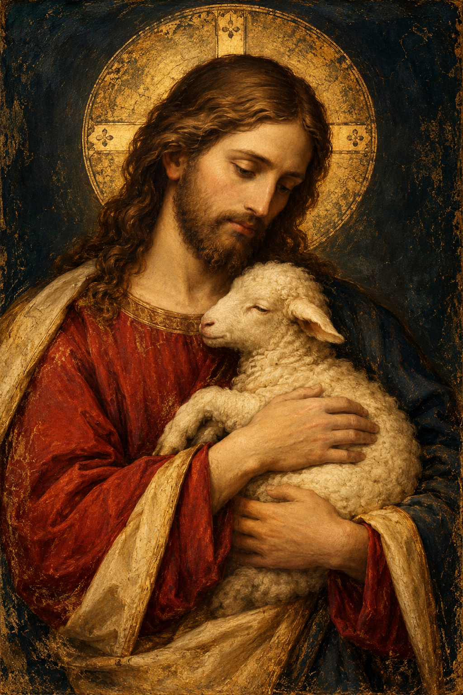

Come, Holy Spirit
Open our hearts to Your truth, guide our understanding, and teach us to walk in the love of Christ. Amen.
Invocation of the Holy Spirit
Holy Spirit, lead us into truth. Give us wisdom to understand Your Word, humility to receive it, and courage to live it. May all we learn draw us closer to Jesus Christ and deepen our love for others. Amen.
The Living Word
Scripture First. Read. Study. Grow.
The approved reader is kept in its own unchanged directory. Your study content remains managed by the reader; these new pages do not yet alter it.
My Studies
Your future home for saved notes, highlights, bookmarks, and developed Scripture studies. This layout establishes the destination without duplicating or rewriting reader records.
Continue studying Scripture ↗Scripture Connections
Explore the relationships you discover between passages. The existing connection editor and saved references remain intact inside The Living Word.
Open Scripture Connections in the reader ↗Prayers
Curated foundational prayers. Further wording and prayer selection remain subject to your approval.
The Lord's Prayer · Matthew 6:9–13
Our Father, who art in heaven, hallowed be thy name. Thy kingdom come, thy will be done, on earth as it is in heaven. Give us this day our daily bread, and forgive us our trespasses, as we forgive those who trespass against us. And lead us not into temptation, but deliver us from evil. For thine is the kingdom, and the power, and the glory, forever. Amen.
Traditional liturgical wording; the concluding doxology has a distinct textual history.Invocation of the Holy Spirit
Holy Spirit, lead us into truth. Give us wisdom to understand Your Word, humility to receive it, and courage to live it. May all we learn draw us closer to Jesus Christ and deepen our love for others. Amen.
Other default prayers will be curated before publication.
The Temple
The existing Temple functions remain available in the preserved V14.2 reference application while we prepare their independent integration.
Open the preserved V14.2 experience ↗This opens the legacy application, not an isolated Temple-only module. No existing V14.2 features have been rewritten.

Follow Him
“My sheep hear my voice, and I know them, and they follow me.” — John 10:27